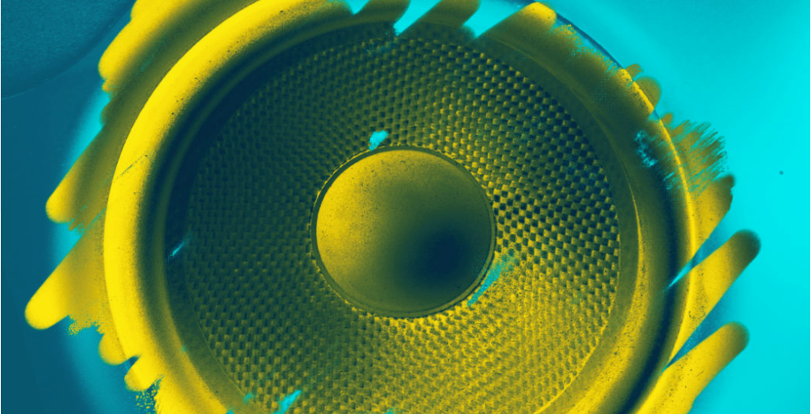

Como Funcionan los Altavoces:
Entendiendo la Reproduccion
de Audio Infográfico

Da una mirada a tu estudio.
Una buena canción es la mejor motivación que puedes tener a la hora de aprender a tocar el piano. Por supuesto, debes de conocer unas pocas reglas básicas antes de empezar. Por ejemplo, qué teclas debes tocar y en qué postura debe estar tu mano. Tampoco debes calentarte la cabeza demasiado en esto, solo basta que le dediques un par de días. ¡Elije una canción y manos a la obra!
>
Escoger la canción adecuada puede resultar más complicado de lo que parece. Es lo más importante de todo.
Si es demasiado fácil, te aburrirás enseguida, pero si es demasiado difícil, terminarás frustrado. Procura encontrar una transcripción sencilla de alguna canción o pieza de música clásica que te guste de verdad.
En flowkey, todas las canciones adecuadas para principiantes están marcadas de verde en la esquinita. Si es tu primera vez con el piano, será mejor que eches un vistazo a nuestra sección de Primeros Pasos.
Ahí encontrarás canciones para familiarizarte con el piano poco a poco. De esta manera, siempre encontrarás una canción acorde a tus habilidades.
Contacto - Saia - PSM Cabimas